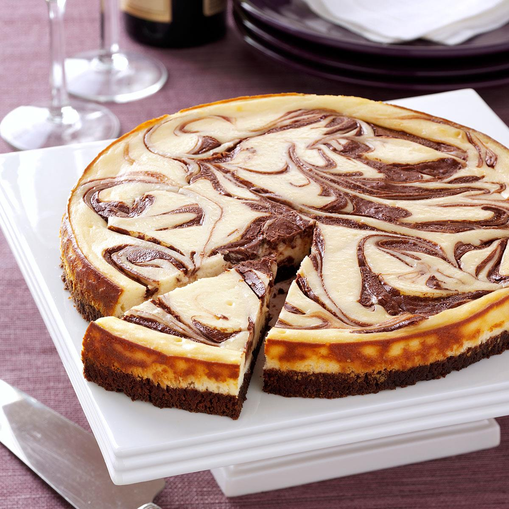

Cheesecake Brownies

- Dish Rundown
These cheesecake brownies are a jazzed-up version of an out-of-the-box brownie mix with an easy cheesecake topping.
- Ingredients
One (18.25oz) Package Of Brownie Mix
Three Tablespoons Of Water
Half A Cup Of Vegetable Oil
Two Large Eggs
1 (8 Ounce) Package Of Cream Cheese
One Large Egg
One Third Cup Of White Sugar
- Steps
- Preheat the oven to 350 degrees F (175 degrees C). Grease a 9x13-inch pan.
- Prepare brownie mix: Stir brownie mix, water, oil, and eggs in a medium bowl until well blended. Spread evenly into the prepared pan.
- Prepare cheesecake topping: Beat together cream cheese, egg, and sugar using an electric mixer until smooth. Dollop the cream cheese mixture on top of the brownie batter. Swirl together using a knife or skewer.
- Bake in the preheated oven for 22 to 25 minutes. Brownies will be done when a toothpick inserted comes out clean. Cool in the pan, then cut into 24 squares and serve.